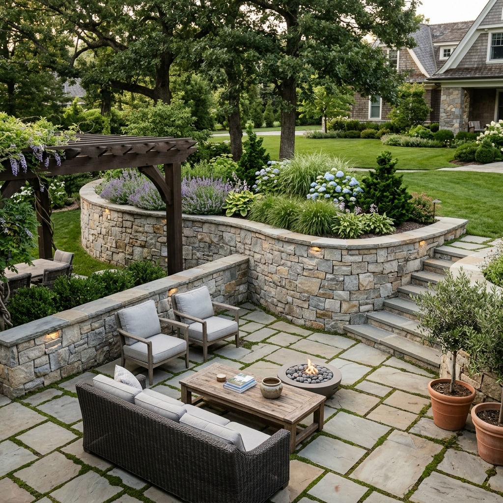
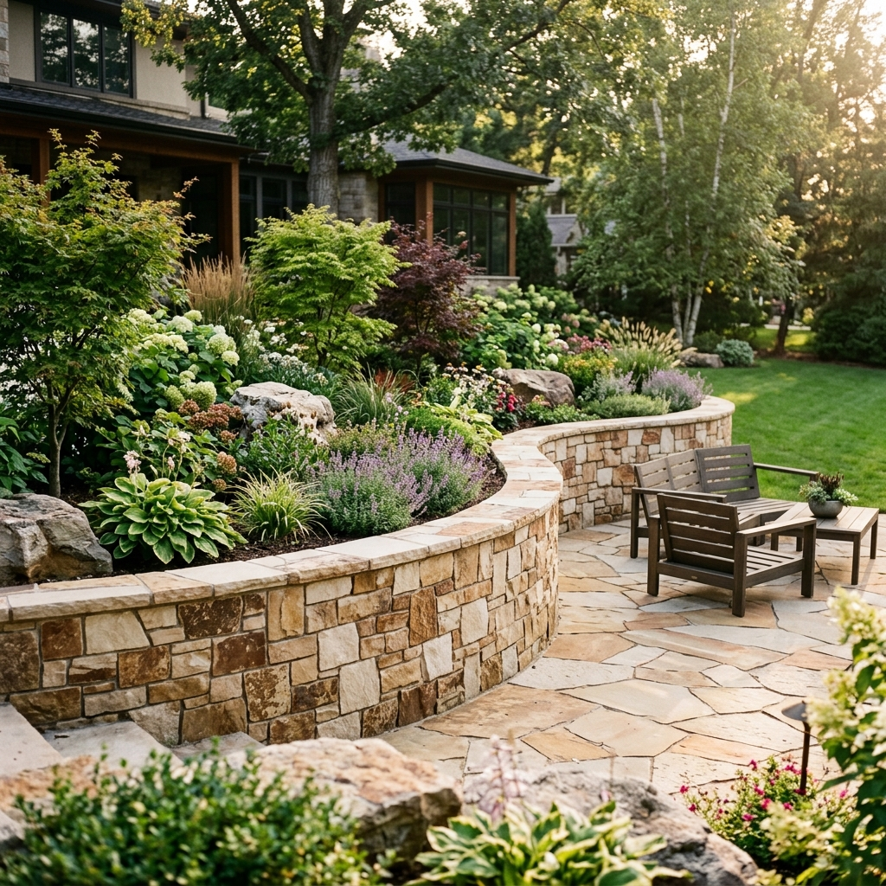
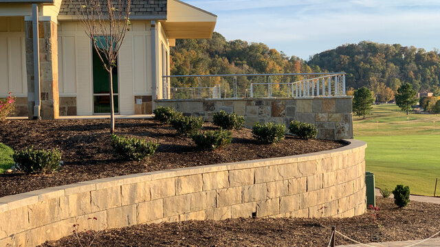
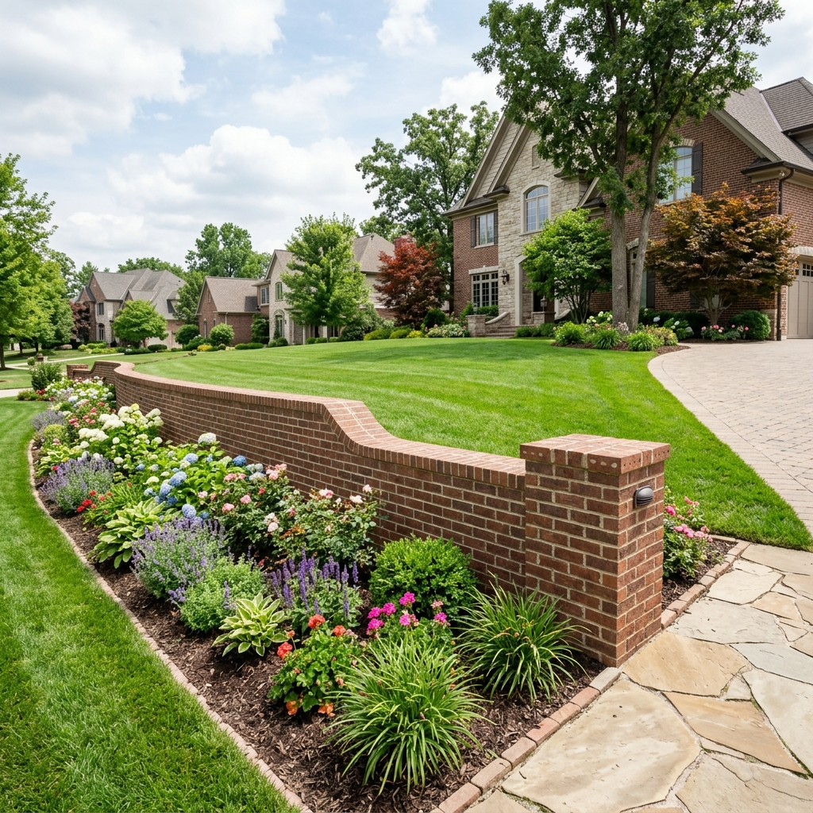
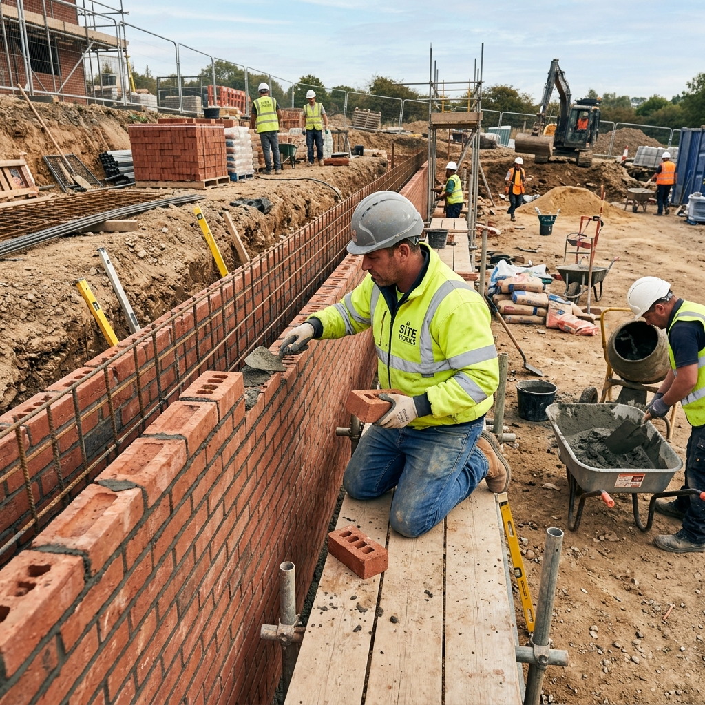

Hardscaping
Patio Roof Installation in Eastern Iowa
Covered patio roofs and pergolas that extend your outdoor living season — built for Iowa weather.
Professional patio roof installation in Eastern Iowa
A patio roof transforms your outdoor space into a year-round living area. We design and build covered patio structures that provide shade, shelter from rain, and protection from the elements — letting you enjoy your patio from spring through fall without weather interruptions.
Our team serves Eastern Iowa homeowners with patio roofs ranging from simple pergola covers to full solid-roof structures with proper flashing, drainage, and attachment to the home's existing structure.
What are the benefits of a patio roof?
Installing a patio roof offers a multitude of benefits for homeowners. It provides much-needed shade and protection from the elements, allowing you to enjoy your outdoor space regardless of the weather. This means you can host gatherings, relax, or dine al fresco without worrying about scorching sun or unexpected rain.
Additionally, a patio roof can extend your living space, creating a seamless transition between indoors and outdoors, making it a versatile area for various activities. It also adds value to your property, enhances its aesthetic appeal, and can potentially reduce energy costs by providing natural insulation. Overall, a patio roof is a smart investment that enhances both the functionality and aesthetics of your outdoor living space.

Do I need to consider lighting and ventilation for my patio roof?
Yes, when planning your patio roof, it's essential to carefully consider both lighting and ventilation. Adequate lighting can enhance the ambiance and functionality of your outdoor space, allowing you to enjoy it during the day and night. You can incorporate natural light through options like skylights or pergola designs that let sunlight filter through. Additionally, strategic placement of artificial lighting fixtures can create a warm and inviting atmosphere after dark. Proper ventilation is equally important to ensure comfort and airflow, particularly during hot or humid weather. Incorporating vents or fans into your patio roof design can help circulate air, keeping the space cooler and more pleasant. By thoughtfully addressing both lighting and ventilation, you can create a patio that's comfortable and inviting throughout the day and evening.

Professional installation vs. DIY — what to consider
Deciding whether to hire a professional for patio roof installation or tackle it as a DIY project ultimately depends on your level of expertise, the complexity of the design, and your comfort with construction tasks. Simple and small patio roofs with basic designs may be suitable for a confident DIY enthusiast with the right tools and a good understanding of carpentry and roofing principles. However, for larger, more intricate projects that involve complex roofing materials, structural considerations, and local building codes, it's often safer and more efficient to enlist the expertise of a professional. Professionals can ensure the roof is installed correctly, meets safety standards, and adheres to local regulations, providing peace of mind and potentially saving you from costly mistakes in the long run. Always assess your skills and the project's scope carefully before deciding to DIY or hire a pro to ensure your patio roof installation is a successful and lasting endeavor.
Market we serve

Residential
Residential retaining wall contractor in Eastern Iowa

Commercial
Commercial retaining wall contractor in Eastern Iowa

Construction Site
Retaining walls for construction site